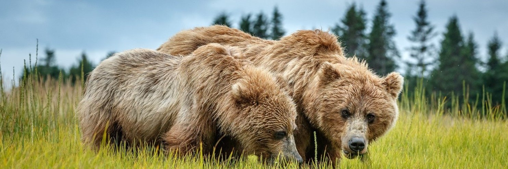
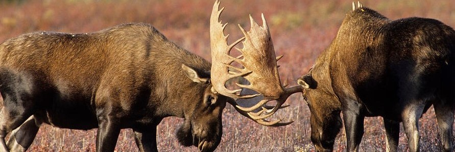

There are more than 50,000 black bears and 35,000 brown bears living in Alaska’s untamed wilderness: they're lumbering through berry-covered hillsides, raising their young and slapping at salmon-choked rivers. But unlike moose, you probably won't casually encounter bears along most roads. You really have to go searching. That’s one reason why bear-viewing tours are some of the pricier excursions you can take in Alaska. Most tour operators gain access to bears’ prime locations by way of a small plane, though some tours will take you on a boat. But it’s completely worth the price—these are just about the best wildlife viewing experiences you can have. Indeed, many companies actually guarantee sightings. They do so because they know when and where to find the peak locations for the major salmon runs each summer. Those snow-fed rivers are shallow, swift, and clear, and they offer a spectacle in themselves— because, along with the arrival of the bright red schools of fish also come the bears. When you take a tour, you’ll see bears congregating near the water—playing, sunbathing, and teaching their young fishing technique—and you can get fairly close without disrupting the event (and, of course, stay safe). You’ll likely also see the bears start feeding with a frenzy. It's not unusual to see 15 or 20 of them throughout the course of the day—and literally tens of thousands of spawning red salmon.
Alaskan wildlife is a hallmark of the northeastern, non-contiguous US state of Alaska. The state can boast of a rich avian diversity with over 430 species of birds including the largest bald eagle population in the nation. It also hosts the brown bear, considered to be the biggest carnivorous land mammal living today. The great spawning migration of the salmon in the Alaskan waters, and the Porcupine caribou migrations (the longest migration among the world’s terrestrial mammals) are spectacular sights to behold in Alaska. Alaska presents to the world the biggest and the best in wildlife and thus attracts thousands of tourists to this US state who arrive here with a longing to sight the wild animals of region.
In some ways, moose are pervasive in Alaska, even in a big city like Anchorage. These massive, hulking creatures jog through soccer and baseball fields, wander neighborhoods in the morning—making paperboys cut short their routes—and nonchalantly cross highways, forcing motorists to wait. Come winter, the moose population in Anchorage explodes, as the animals head to lower levels to find food. In other words, they often live off the locals’ landscaping, eating mountain ash and birch trees. Many an Alaskan wakes up in the morning to find the trees in his front yard destroyed (and, perhaps, the culprit curled up and snoozing against the warm house). Of course there’s wildlife all over Alaska, but you can never have a guarantee of seeing them—except at one of several wildlife parks, where you can view Alaskan animals up close. Here are our favorites: The Alaska Wildlife Conservation Center is located just an hour south of Anchorage. Spread across 90 acres, the animals live in large enclosures—so large, in fact, that your photographs appear to be of animals in the wild. You’ll be close enough to see the individual feathers of a bald eagle, watch bears play, or hear the bison as they rip grass out of the earth for lunch. The Alaska Raptor Center in Sitka, where you can resident birds such as eagles, owls, and falcons. The renowned Alaska Sealife Center in Seward is home to stellar sea lions, harbor seals, and lots of shorebirds. You can witness a 2,000-plus-pound Stellar sea lion gliding past underwater viewing windows, as well as puffins diving in a carefully crafted naturalistic habitat, or harbor seals resting on rocky beaches The Alaska Zoo, located in South Anchorage, isn’t like normal zoos. Enclosures are spread throughout a wooded area, leaving plenty of space between them, so that animals are not crowd Other great options include the Reindeer Farm and the Musk Ox Farm, where guests can view these two species while learning about the farm operations.